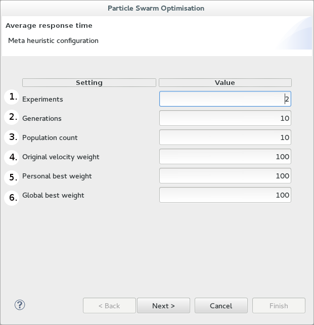

Starting a PSO: Particle Swarm Optimisation configuration

The above is a screen shot of the first page of the CPT PSO wizard. In this page you are configuring the PSO parameters:
- Experiments - Choose the number of times you would like to run a PSO.
- Generations - Choose the maximum number of 'moves' each particle can do.
- Population - Choose the number of particle agents searching the space.
- Set the Original velocity weight*.
- Set the Personal best weight*.
- Set the Global best weight*.
*See "Particle veloctiy" in the CPT reference for more details...